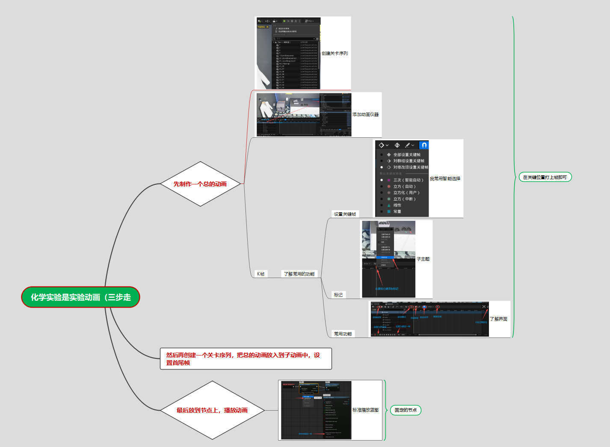
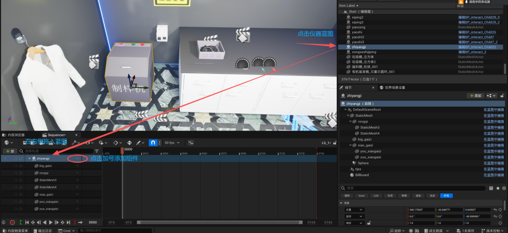
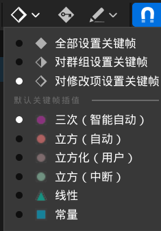
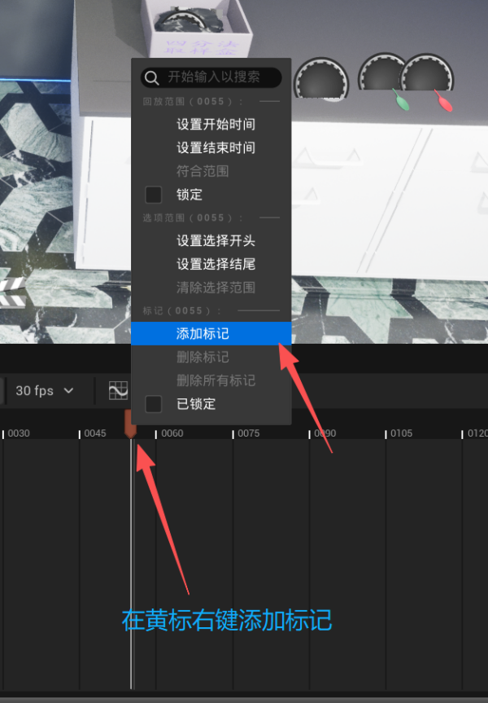
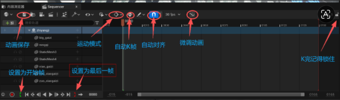
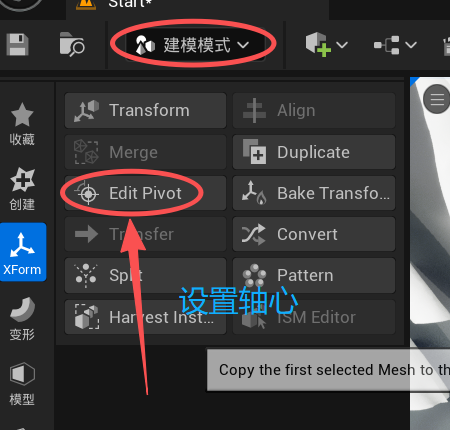

关卡序列动画¶
Level Sequence · Sequencer · 实验步骤动画。
思维导图¶
化学实验动画的完整思路，点击放大：

制作动画分三步走：先制作一个总的动画 → 放到子序列上剪切 → 播放。
1. 创建关卡序列¶
内容浏览器右键 → 动画 → 关卡序列，起名（LS_）。双击打开 Sequencer 编辑器。
2. 添加动画仪器¶
把场景里要动的仪器拖到 Sequencer 轨道里，自动创建 Transform 轨道。

3. K 帧¶
把时间指针拖到目标位置 → 场景里移动/旋转仪器 → 回车打关键帧。
了解常用的功能¶
设置关键帧¶

标记¶

常用功能¶
熟知以下功能可以提高效率：

轴心设置¶
使物体沿某一轴旋转时需要调整轴心

子序列¶
先做总的主序列，然后把其他关卡序列拖进去当子序列，设置首尾帧即可。
改细节进子序列改，不影响主序列。